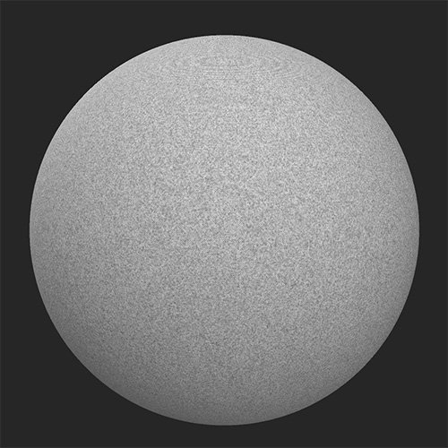
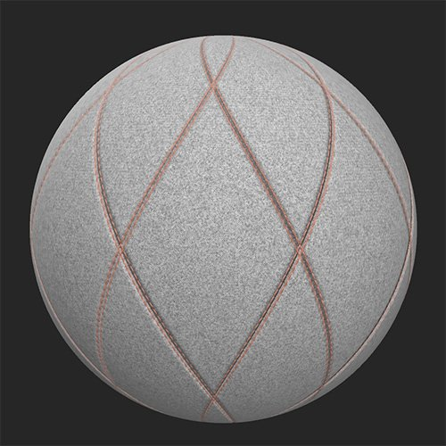

Emulate a stitched quilt pattern in your materials with this filter.
Before and after applying the Quilt Stitch filter.


Parameters
Basic parameters
Random Seed: The random seed determines the random values of other parameters that use randomness in this filter.
Pattern Selection: Select the style of pattern for the stitching/quilt to follow
Amount: 1-5 Control the amount of tiling of the pattern
Rotation: Rotate the pattern
Topstitch: toggle Enable to add a topstitch and see relevant parameter section
Seam: toggle Enable to add a seam and see relevant parameter section
Quilt: toggle Enable to add quilting and see the relevant parameter section
Edge Paint: toggle Enable to pain the edge between quilted sections and see the relevant parameter section
Advanced: toggle Enable to see the Advanced parameters
Topstitch
Topstitch Color: color select Set the color of the thread used for the topstitch
Topstitch Offset: 0-1 Offset the topstitch from the edges of the quilted area
Topstitch Rotation: 0-1 Change the orientation of the stitches that make up the topstitch
Topstitch Scale: 0-1 Adjust the size of the topstitch in each dimension - width, length, and height
Puncture Intensity: 0-1 Adjust the indentation into the quilting caused by the topstitch
Topstitch Roughness: 0-1 Adjust the roughness of the thread
Topstitch Metallic: 0-1 Adjust the metallic value of the thread
Seam
SeamSelection: Select the style of seam to use
Seam Intensity: 0-1 Modify the normal and height intensity of the seam
Stretch Intensity: 0-1 Adjust how much of an impact the stretch of the fabric has on the seam. This effect is quite subtle.
Quilt
Quilt Type: Select the style of quilting to use
Quilt Intensity: Adjust the normal and height intensity of the quilting effect
Edge Paint
Edge Selection: Select whether the pain overrides the normal and height details of the underlying material or not
Edge Color: color select Select the paint color
Edge roughness: 0-1
Edge Metallic: 0-1
Advanced
Base Material Height: 0-1 Adjust the strength of the height map from the underlying material
Normal Intensity: 0-1 Adjust the strength of the normal map changes due to the Quilt Stitch filter. This does not impact the normal of the underlying material.